💬
Chat en streaming
Las respuestas llegan palabra a palabra. Elige modelo y potencia, y usa los comandos de complementos /web, /img y /nota.
¿Me explicas qué es un agujero negro en 3 frases?
/web/img/notaPro · Media
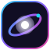
NebulaIA DescargarTu universo de inteligencia artificial
Chatea en streaming, genera imágenes, deja que un agente navegue por ti, programa con Coder, abre un terminal de verdad y conecta tus apps. En tu móvil y en tu PC.
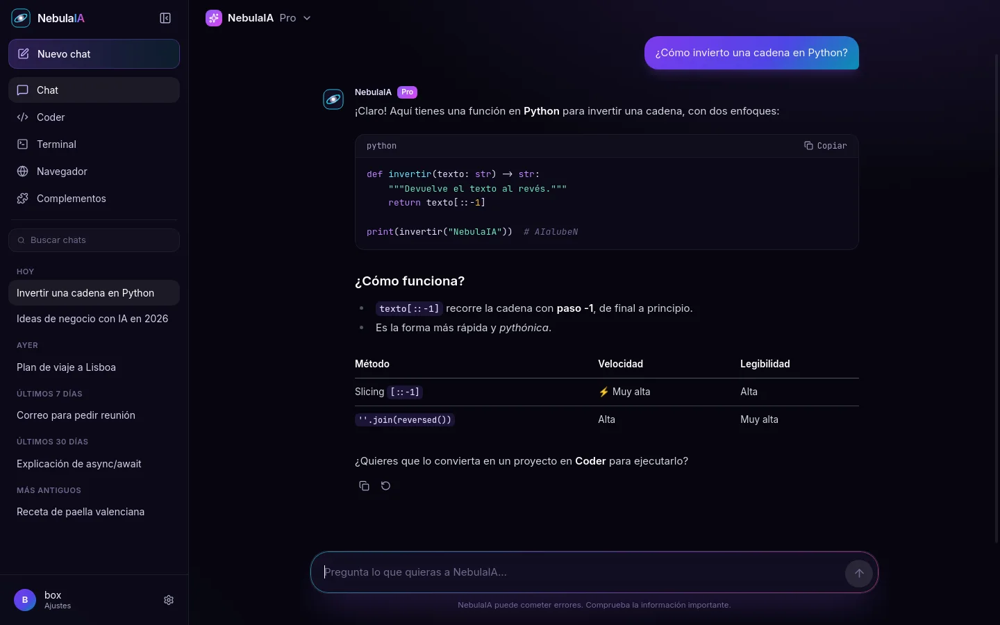
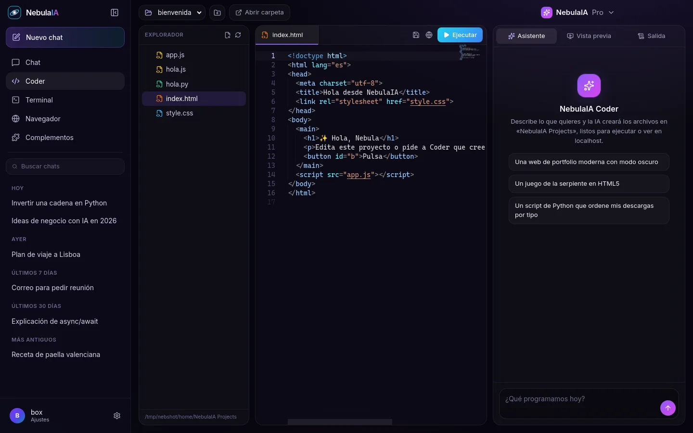
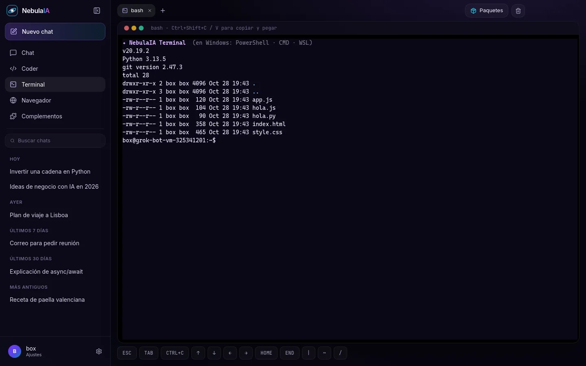
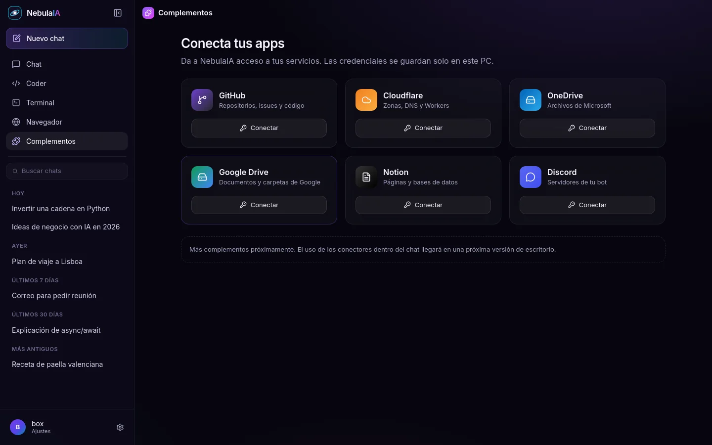
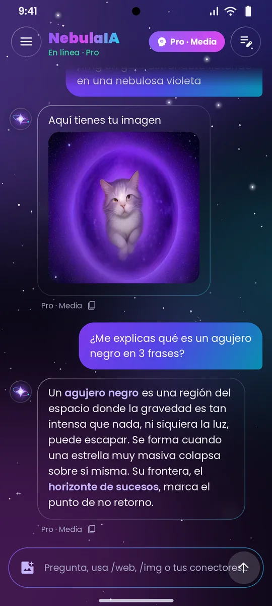
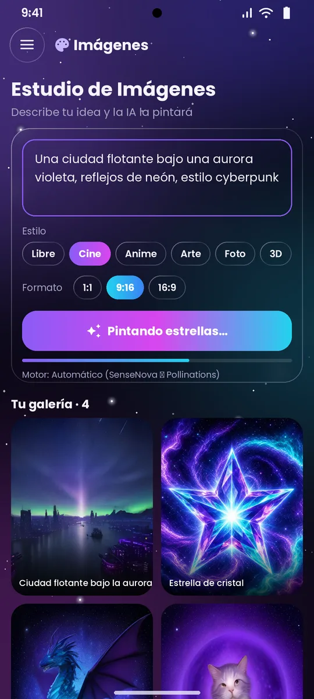
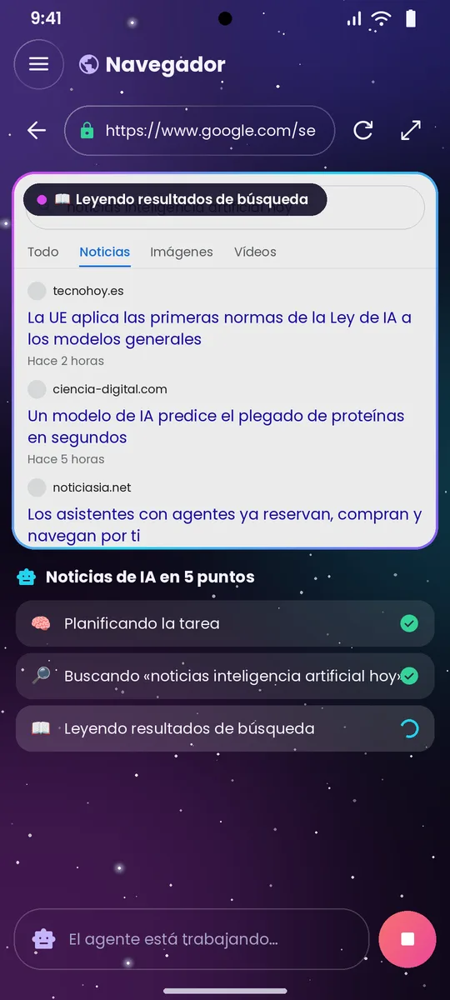
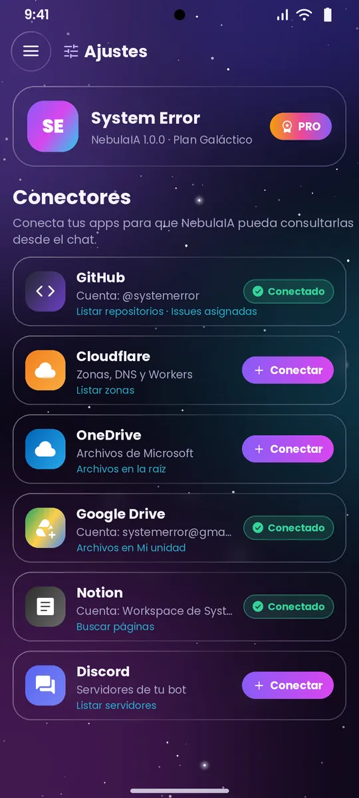
Cada función sale del código real de la app. Pasa el ratón por las tarjetas.
Las respuestas llegan palabra a palabra. Elige modelo y potencia, y usa los comandos de complementos /web, /img y /nota.
Describe tu idea y la IA la pinta: estilos Libre, Cine, Anime, Arte, Foto o 3D y formatos 1:1, 9:16 o 16:9. Si un motor falla, salta solo al de respaldo. Guarda en la galería (Pictures/NebulaIA).
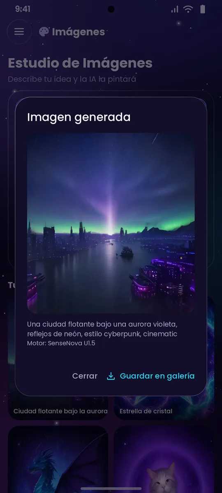
Pintando estrellas…Escribe una tarea («busca…», «entra en… y dime…») y NebulaIA navega en un WebView real mostrando cada paso y resaltando lo que toca. En Android, además, «Resumir con IA» y «Enviar al chat».
Pide una web o un script y Coder lo guarda como archivos reales en NebulaIA Projects. En Android las webs se arrancan en localhost en el propio móvil; en Windows tienes explorador de archivos, editor Monaco, vista previa y salida.
PROYECTO: hola-nebula
En Android, un emulador estilo Termux con PTY real, pkg/apt, vi, nano o htop y barra de teclas propia; si proot no arranca (p. ej. en Xiaomi), un modo directo lo resuelve. En Windows, PowerShell, CMD o WSL.
Conecta GitHub, Cloudflare, OneDrive, Google Drive, Notion y Discord. Con uno activo, el chat decide qué herramienta usar, por ejemplo listar tus repos o tus archivos de Drive.
Habla y NebulaIA escribe. Primero usa whisper.cpp incluido en la app, en local y sin internet; si no puede, tiene motores de respaldo.
En Android cada token de conector se verifica con la API real del servicio y se guarda cifrado con AES-GCM y clave en Android Keystore. En Windows los complementos se conectan con OAuth en el navegador y las credenciales se quedan en tu PC.
Tres modelos y cuatro niveles de potencia. Cambia la combinación y mira cómo se ajusta la creatividad, la longitud de respuesta y el razonamiento. Si un modelo falla, la app prueba sola el siguiente.
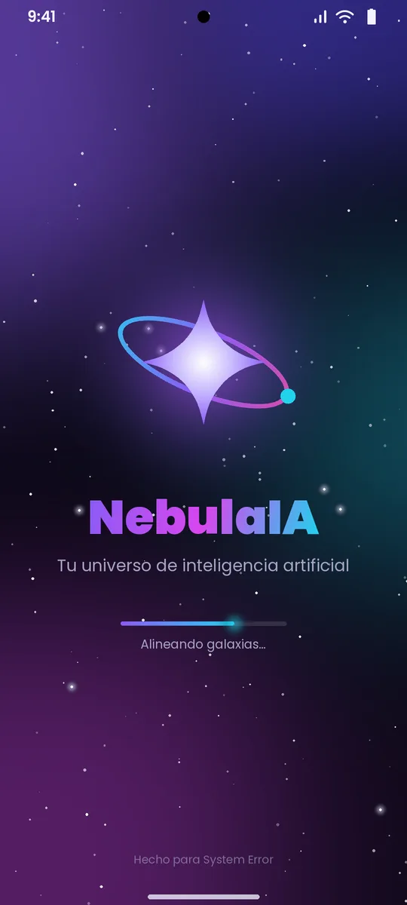
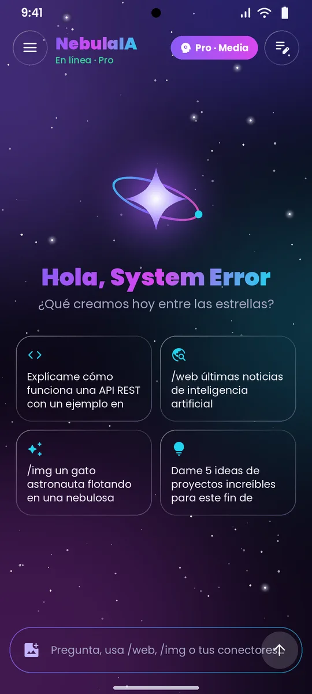
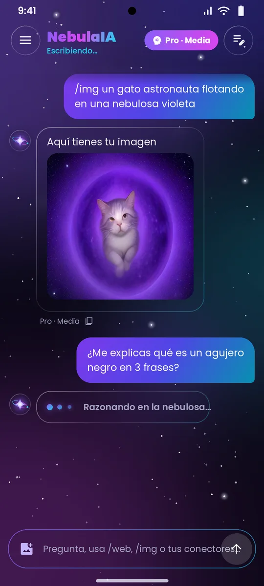
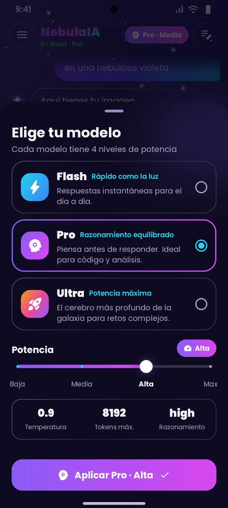
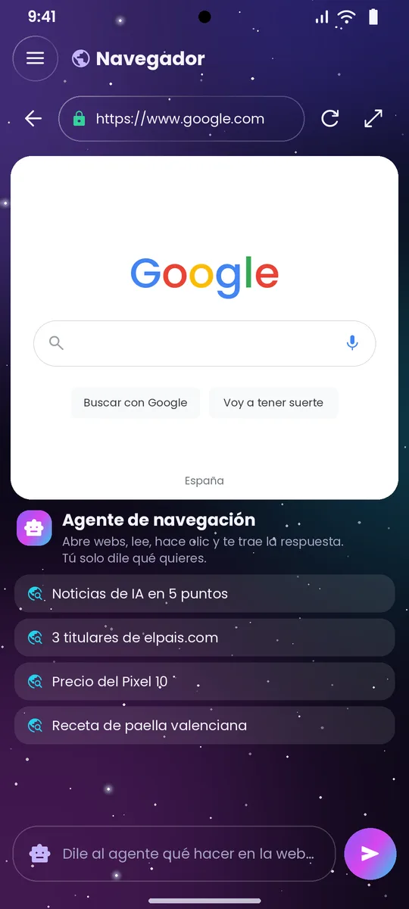
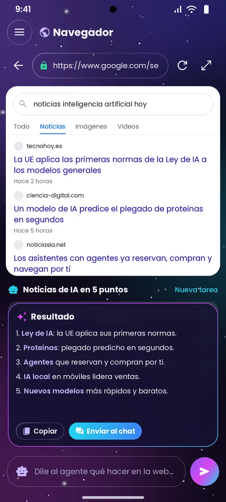
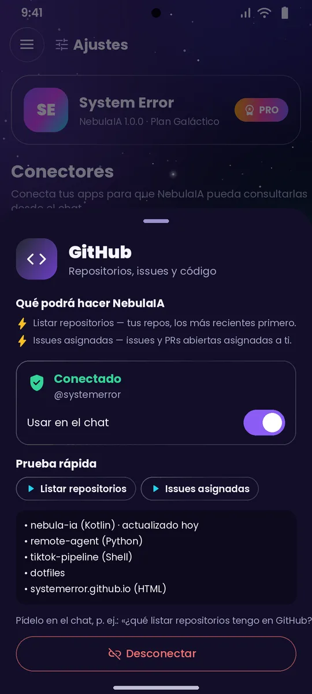
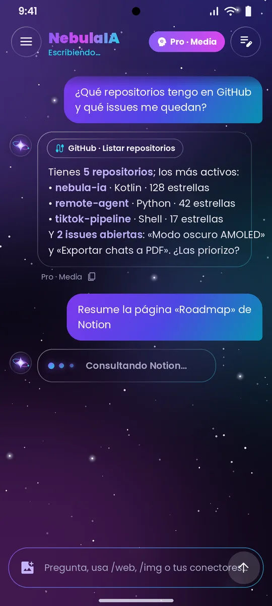
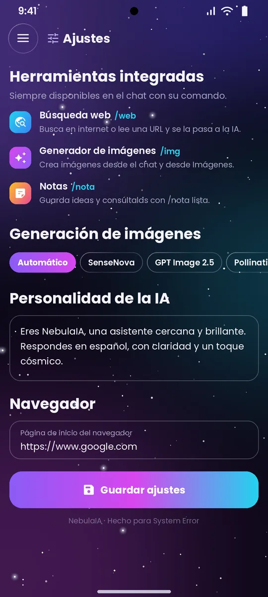
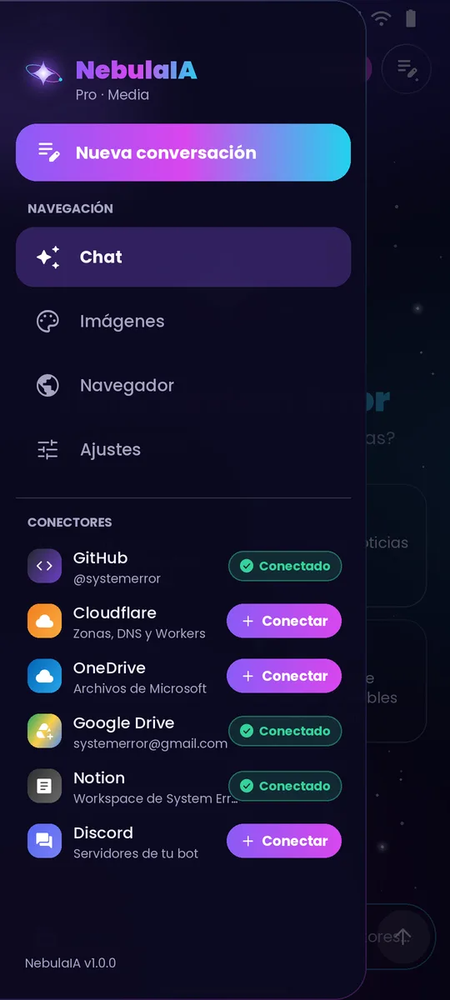
El vídeo oficial de la app para Android: chat, imágenes, navegador con agente y conectores en menos de un minuto.
Música: «Dreams Become Real», Kevin MacLeod (incompetech.com), CC BY 4.0.
Elige tu plataforma. Las descargas son directas desde GitHub Releases.
Android 8.0 o superior. Incluye el terminal con su arreglo para Xiaomi.
Descargar APKMD5 099334269d61c3bd77a55b94b0a751bc
Windows de 64 bits. Se instala como cualquier programa de Windows.
Descargar instaladorMD5 e5cda8b98905b6abd492791db7674725
Sin instalación: descomprime la carpeta y ejecuta NebulaIA.exe.
MD5 3f586e7de7514e5cd3d798873e4cf1f8
NebulaIA-Setup-1.0.0.exe. Si Windows SmartScreen avisa de que el editor es desconocido, pulsa «Más información» y luego «Ejecutar de todas formas».NebulaIA.exe dentro de la carpeta.Documentos\NebulaIA Projects.En el móvil, Android 8.0 o superior. En el ordenador, Windows de 64 bits. Para chatear, generar imágenes y navegar hace falta conexión a internet.
Porque la app se instala desde un archivo y no desde Google Play. Es normal: permite «instalar apps desconocidas» para la app con la que abres el APK y sigue los pasos de arriba.
SmartScreen avisa con los programas que todavía no tienen firma ni reputación. Pulsa «Más información» → «Ejecutar de todas formas». Si prefieres no instalar nada, usa la versión portable.
No. NebulaIA lleva su propio emulador de terminal y, la primera vez, descarga el entorno oficial de Termux (unos 30 MB) dentro de la app. Funcionan pkg, apt, vi, nano, top o htop. Si proot no arranca en tu móvil (pasa en algunos Xiaomi), la app usa un modo directo.
En Android, cada token se comprueba contra la API real del servicio y se guarda cifrado con AES-GCM y clave en Android Keystore. En Windows, la conexión se hace con OAuth en tu navegador y las credenciales se guardan solo en tu PC.
En una carpeta real llamada NebulaIA Projects: en Documentos del móvil (si das acceso a archivos; si no, en la carpeta interna de la app) y en Documentos\NebulaIA Projects en Windows.
En Windows, primero usa whisper.cpp incluido en la app, que funciona en local y sin internet. Solo si no está disponible recurre a otros motores.